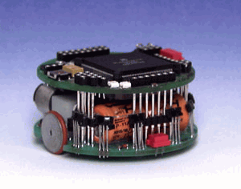

A robot
- Khepera robot és szimulátorai
- Kicsi robot, fény és taktilis szenzorokkal
- Kerekekhez tartozó két motor
- Memória és kommunikáció

Nehézségek
- Gyakori szereplõ, mert kicsi és egyszerû, de...
- Környezet felépítése (anyagok, színek, méretek)
- Nem látható elemek (fényváltozás, lejtés, egyenetlenségek)
- Részletek elhagyása: szimulálás